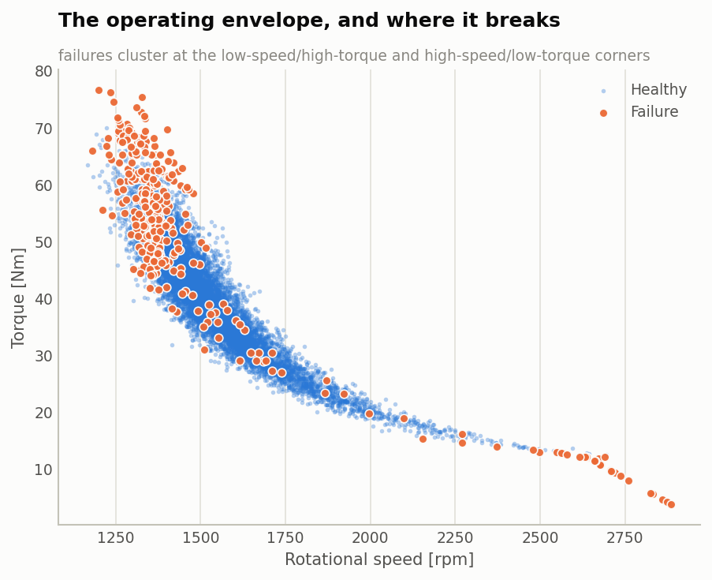
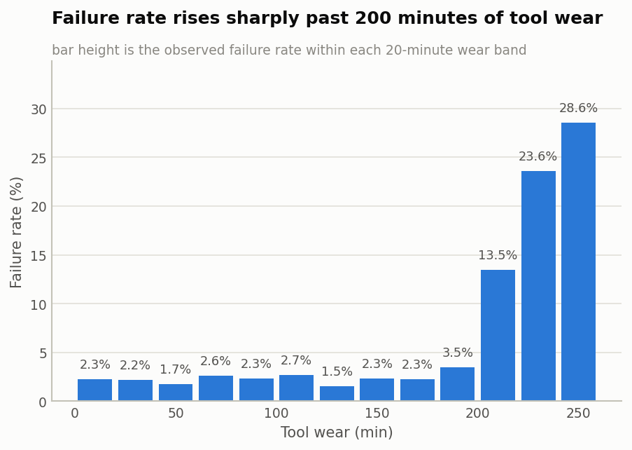
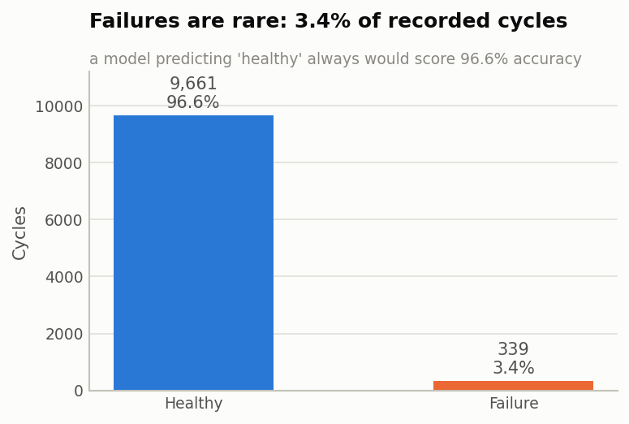
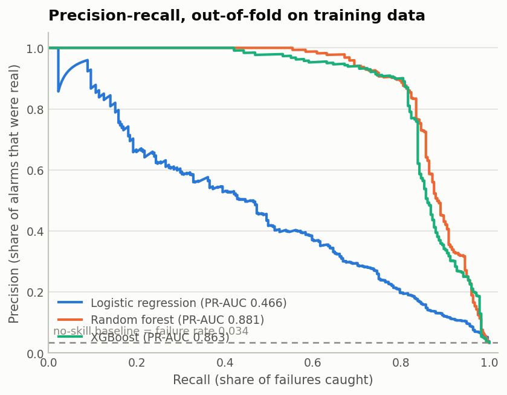
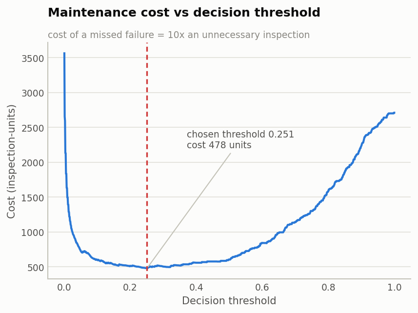
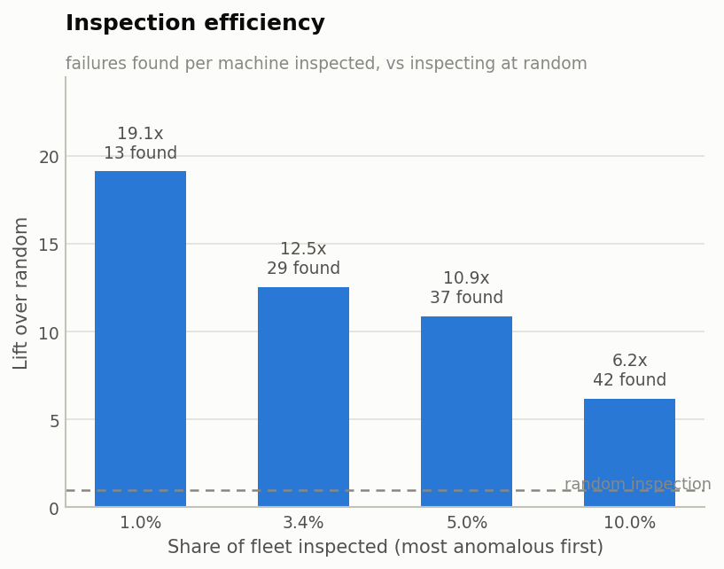
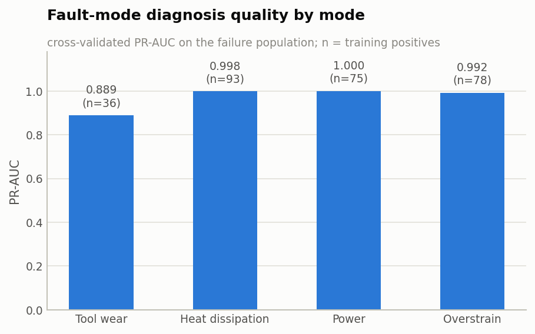
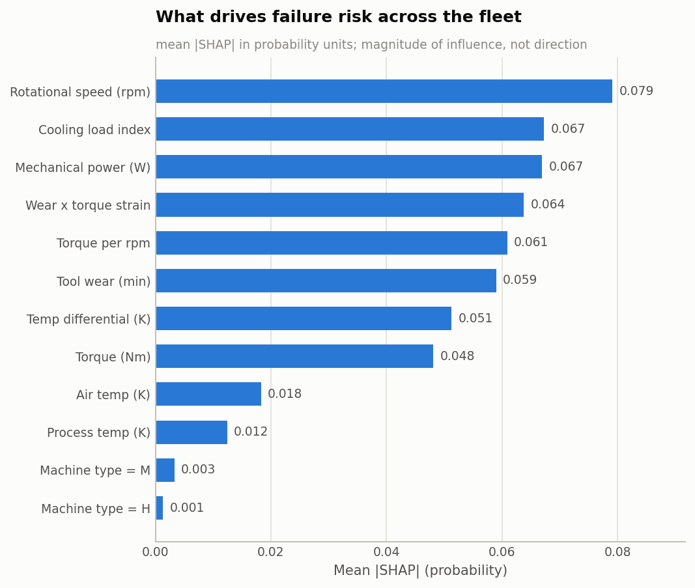
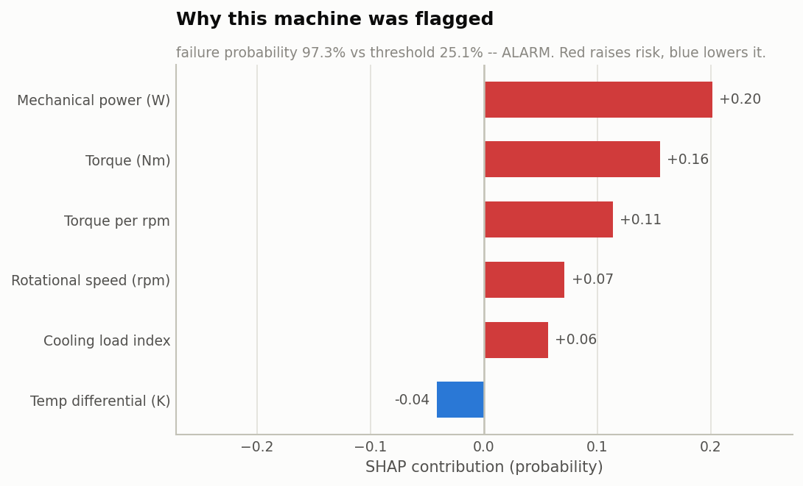

A six-stage machine learning system that predicts spindle failure from six sensor channels, names which of four physical faults is developing, flags abnormal operating conditions without labels, and explains every alarm in engineering terms.
Eight of them are tool-wear failures. The other two have no recorded cause at all. The system missed zero heat-dissipation failures, zero power failures and zero overstrain failures out of 62 in the held-out set.
That is the result worth defending. The residual error sits precisely where the data itself is stochastic: the tool-wear failure rule carries a random component, and the two causeless rows are label noise with identical sensor readings to cycles labelled healthy. Everything with a deterministic physical signature was caught.
Failures caught by recorded mode, held-out set. Modes co-occur, so these counts overlap; the 10 misses comprise 8 tool-wear and 2 causeless rows.
The AI4I 2020 dataset records 10,000 machining cycles: ambient and process temperature, spindle speed, torque, cumulative tool wear, and the machine's quality variant. It arrives with no missing values, no duplicate rows and no duplicate identifiers — so the cleaning effort goes entirely into label consistency, where three problems hide.
| Finding | Rows | Consequence |
|---|---|---|
RNF flags on cycles that completed fine |
18 of 19 | Random failure kept in the binary target, excluded from fault diagnosis |
| Failures with no mode flag at all | 9 | Kept in the binary target, excluded from fault diagnosis |
| Failures carrying two or more modes at once | 23 | Fault diagnosis is multi-label, not multi-class |
9 of 339 recorded failures — 2.7% — have no physical fault signature. Cycles with identical sensor readings are labelled healthy elsewhere in the data, so these are unpredictable by construction. Recall is judged against that ceiling, not against 100%.
Power is. Heat-rejection capacity is. Accumulated strain is. So five physical quantities are derived from the raw channels:
AI4I's labels were generated by threshold rules over these same quantities — a heat-dissipation failure is recorded when the differential falls below 8.6 K while speed is below 1380 rpm. Encoding those thresholds as features produces near-perfect scores and is, correctly, dismissed as circular.
So there are no threshold flags, no variant-specific limits, no margin-to-threshold distances anywhere in the feature set. The models had to find the operating limits themselves. That is why the binary stage lands at 0.877 rather than 0.99.



No rows were removed. Rotational speed carries the largest population of statistical outliers, and the failure rate among those outliers is several times the fleet rate — they are machines running at the edge of their envelope, which is exactly the population the system exists to catch.
Logistic regression first, as a fully interpretable reference. Then a random forest, then gradient boosting. No deep learning: with 10,000 rows and 339 positives it would be harder to justify and harder to explain.
| Model | CV PR-AUC | Std dev | Imbalance handling |
|---|---|---|---|
| Random forest — selected | 0.881 | ±0.025 | balanced subsample weights |
| XGBoost | 0.864 | ±0.031 | scale_pos_weight ≈ 28.5 |
| Logistic regression | 0.473 | ±0.056 | balanced class weights |

A classifier emits a probability; maintenance needs a yes/no. For a 3.4%
event rate, 0.5 is close to never correct. The assumption used here:
a missed failure costs 10× an unnecessary inspection. Both
true and false positives incur the same inspection cost, so it cancels, and
the objective reduces to cost = 10 × missed + 1 × false alarms.

Because the 10:1 ratio was chosen rather than measured, its influence is quantified rather than hidden. A maintenance manager picks the row; the model supplies the trade-off.
| Miss : false alarm | Threshold | Precision | Recall | False alarms | Missed |
|---|---|---|---|---|---|
| 5 : 1 | 0.321 | 83.4% | 83.4% | 45 | 45 |
| 10 : 1 — used | 0.251 | 72.5% | 85.6% | 88 | 39 |
| 20 : 1 | 0.126 | 49.1% | 88.9% | 250 | 30 |
| 50 : 1 | 0.054 | 31.6% | 94.5% | 555 | 15 |
Handled with class weights, not SMOTE. Synthetic sensor readings can be physically impossible — a torque/speed pair off the constant-power hyperbola describes a machine that cannot exist — and oversampling must never touch a validation fold. Class weighting has neither problem.
The classifier can only recognise the four modes it was trained on. A real plant also suffers faults with no labelled examples: a new tool supplier, a degrading coolant pump, a miscalibrated sensor. An Isolation Forest fitted on healthy rows only answers a different question — is this machine operating unlike anything in its own normal history?

The honest read: clearly informative, clearly weaker than the supervised classifier, and that is the expected result. Most failures here occur at operating points that are individually unremarkable and only dangerous in combination — which an unsupervised detector with no label access cannot know. It earns its place by covering fault types a supervised model structurally cannot.
Remaining useful life needs run-to-failure trajectories: the same unit
tracked over time until it dies, so that "cycles remaining" is observable.
AI4I has no such structure — each row is an independent snapshot with no
unit identity carried across rows. Tool wear [min] looks like a
clock, but nothing links one row to the next.
Manufacturing an RUL target from the tool-wear threshold would yield
240 − tool_wear: arithmetic dressed up as a model. So
RUL is not claimed here. What the data does support is
fault-mode diagnosis — the step that turns an alarm into a work order.

Power scores PR-AUC 1.000 and heat dissipation 0.998. That is structural, not an achievement: AI4I's fault modes are defined by threshold rules over the physical quantities in Stage 2, so recovering a cut point on a feature the model sees directly is not a hard inference problem. No rule or flag was fed in — the model found the cut points itself — but the fault-mode stage is still the wrong measure of this project's difficulty. The binary stage is the right one.
Tool wear, at 0.889, is the one mode with genuine irreducible difficulty: the fewest examples (36) and a stochastic rule. It is also, as the principal finding above shows, where every avoidable miss lives.
An engineer needs to know why a machine was flagged, in quantities they recognise. SHAP gives each feature an additive contribution to a specific prediction.


TreeExplainer reports contributions in whatever space the
model's raw output occupies: probability for a random
forest, which averages leaf class frequencies, and
log-odds for gradient boosting, the additive margin
before the logistic link. +0.20 means very different things
in the two cases, so the explainer detects its model and labels every
figure accordingly.
The false alarms are worth studying rather than hiding. They are not random: the model flags machines in genuinely marginal regions — high strain, marginal cooling — that happened to complete the cycle anyway. At a 10:1 cost ratio, inspecting them is the correct call even though nothing was wrong this time.
UDI and Product ID are excluded as identifiers — one is a row counter, the other encodes the machine variant that is already a feature.random_state = 42), so a fresh run reproduces every figure on this page.